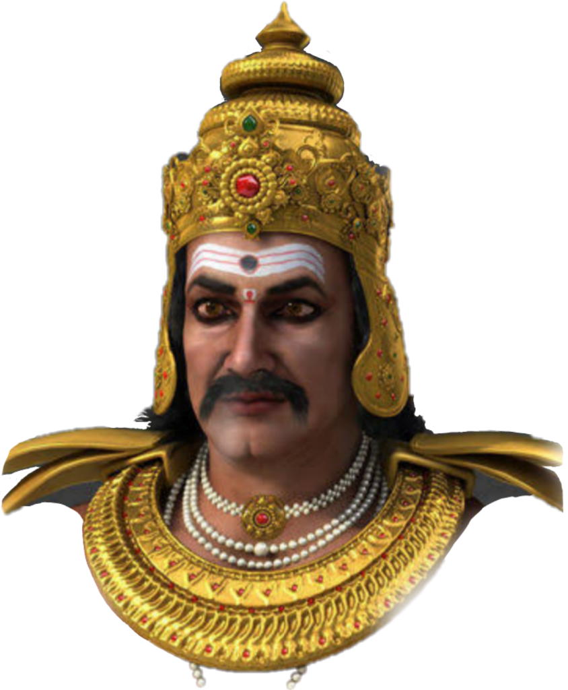

Ravana birth
The story of Ravana’s birth definitely qualifies as an interesting one.
Brahma the Creator gave rise to fourteen Prajapatis - Daksha, Vasishtha, Narada and others.
Among them was Pulastya, a great sage. Pulastya had two sons, Agastya and Vishrava. Both grow up to be Maharshis.
Vishrava is married Ilavida and has a son called Kubera.
Elsewhere, in the court of Sumali, the king of Rakshasas a discussion is going on. The rakshasa lineage is weakening, and the king has no sons.
The only way to produce a powerful progeny is to marry Princess Kaikesi to a very powerful man. After a long search and plenty of rejections one of the ministers suggests Vishrava, a sage full of tejobala.
The rakshasa party visits the hermitage, and Kaikasi takes a liking to Vishrava. However, when asked by the king, Vishrava refuses, citing astrological reasons - "The time is inappropriate," he says.
Sumali and his daughter are not the kind that don't gives up so easily.Kaikasi tries talking to Vishrava, but fails. She then tries to seduce him. But no, the maharshi is unmoved. Kaikesi is still resolute, and waits.
She asks him to marry her while he is performing a Yajna - when he cannot say no - and thereby manages to trick Vishrava into accepting the proposal.
Vishrava is irked by this conspiracy, and in fury, he curses that all the children born as a result of this sinful relationship will likewise be unscrupulous, and will tread the path of adharma.
Shocked and saddened by this curse, Kaikesi pleads to her husband, asking him to revoke it. Vishrava is initially stubborn, but later eases it up a bit. He says the children would be immoral but for the last one, who would be a true embodiment of righteousness.
With time, the couple gave birth to four children - Dashagreeva, Kumbhakarna, Shurpanakha and Vibhishana. Dashagreeva is best known to us as Ravana.
Ravan's grandfather, the sage Pulastya, was one of the ten Prajapati or mind-born sons of Brhma and one of the Saptarishi (Seven Great Sages Rishi) in the first Manvantar. Kaikasi's father, Sumali (or Sumalaya), king of the Daityas, wished her to marry the most powerful being in the mortal world, so as to produce an exceptional heir. He rejected the kings of the world, as they were less powerful than him. Kaikesi searched among the sages and finally chose Vishrava, the father of Kuber. Ravan was a Daitya or Rakshas. Ravan later usurped Lanka from his half brother Kubera and became the King of Lanka and became a Kshatriya thereon. Rama had once addressed Ravana as a "Maha Brahman" (Great Brahman in the context of his education).
Ravana had a mixed ancestry - his father a Vedic rishi [sage Vishrava] and his mother Kaiskesi was the daughter of the great Rakshasa king Sumali. While Asuras probably referred to the “barbarians” in the northwest, Rakshasas referred to the “barbarians” in the south.
Thus, Ravana is probably half-Aryan and half-Adivasi. However, there is no indication of Ravana using Tamil anywhere - neither in Valmiki’s or Kambar’s works nor in later Sinhala works. There is no ancient Tamil literature that tries to claim Ravana as a Tamil.
The names of the Ravana and his siblings are all in Sanskrit. His brother Vibhishana used to be greatly venerated by the Sinhala community. He was considered to be a Sinhala and by association so was Ravana.
His brothers were Vibhishan & Kumbhkarn (some sources mention of another brother called Ahiravan).
Through his mother, he was related to the daityas Maricha and Subahu. Kaikesi also gave birth to a daughter, "Chandramukhi" ("girl with moon-like face"), although later she was dubbed the infamous Shurpanakha, "winnow-like nails".
Father Vishrava noted that while Ravan was aggressive and arrogant, he was also an exemplary scholar.
Under Vishrava's tutelage, Ravan mastered the Vedas , the holy books, and also the arts and ways of Kshtriya (warriors).
Ravan was also an excellent Veena player and the sign of his flag had a picture of veena on it. Sumali, his maternal grandfather, worked hard in secret to ensure that Ravan retained the ethics of the Daityas.
The Ramayana tells that Ravan had close connections with region of the Yadus, which included Gujarat, parts of Maharashtra and Rajasthan up to Mathura south of Delhi.
Ravana is believed to be related to Lavanasura, also regarded as a Rakshasa, of Madhupura (Mathura) in the region of the Surasenas, who was conquered & killed by Shatrughna, youngest brother of Rama.
After worshiping Lord Shiva on the banks of the Narmada, in the more central Yadu region, Ravana was captured and held under the control of KingKartvirya Arjun, one of the greatest Yadu kings.
It is very clear from the references in the Ramayana that Ravan was no commoner among the Humans or Asuras, a great chanter of the Sama Veda.
Tapasya to Brahma
Following his initial training, Ravana performed an intense penance (or tapasya) to Brhma , lasting several years.
During his penance, Ravana chopped off his head 10 times as a sacrifice to appease him. Each time he sliced his head off a new head arose, thus enabling him to continue his penance.
At last, Brahma, pleased with his austerity, appeared after his 10th decapitation and offered him a boon. Ravana asked for immortality, which Brahma refused to give, but gave him the celestial nectar of immortality.
The nectar of immortality, stored under his navel, dictated that he could not be vanquished for as long as it lasted.
Ravana also asked for absolute invulnerability from and supremacy over gods, heavenly spirits, other rakshas, serpents, and wild beasts.
Contemptuous of mortal men, he did not ask for protection from these.
Brahma granted him these boons in addition to his 10 severed heads and great strength by way of knowledge of divine weapons and magic. Thus Ravana known as 'Dasamukha' or 'Dashaanan' (Dasa - ten, mukha/anan - face).
King of Lanka
After winning these boons, Ravana sought out his grandfather, Sumali, and assumed leadership over his army.
He then set his sights on capturing the island city of Lanka.
Lanka was an idyllic city, created by the celestial architectVishwakarma for Shiva and acquired by Kuber, the treasurer of the gods upon advice of his father Visravas.
Visrava had asked for Lanka made from gold from Shiva as dakshina for the house warming ceremony he had conducted for Lanka.
Kubera had generously shared all that he owned with Ravana and the latter's siblings, who were Kubera's half-brothers and half-sister from his stepmother Kaikesi.
However, Ravana demanded Lanka wholly from him, threatening to take it by force. Vishrava, their father, advised Kubera to give it up to him, as Ravana was now undefeatable.
Although Ravana usurped Lanka, he was nevertheless regarded as a benevolent and effective ruler. Lanka flourished under his rule, to the extent that it is said the poorest of houses had vessels of gold to eat and drink off, and hunger was unknown in the kingdom.
Devotee of Lord Shiva
Following his conquest of Lanka, Ravan encountered Shiva at his abode in Kailash. Ravan at first went to meet Shiva.
Nandi the vehicle of Shiva, refused to let Ravana in. He got annoyed and started teasing Nandi. Nandi in turn got annoyed and cursed Ravan that Lanka would be destroyed by a monkey.
To show Nandi his love for Shiva, Ravana attempted to uproot and move the mountain on a whim. Shiva, annoyed by Ravana's arrogance, pressed his littlest toe on Kailash, pinning him firmly and painfully under it.
His Ganas informed Ravan of whom he had crossed, upon which Ravan became penitent. He plucked his nerves and used them as strings to compose music and sang songs praising Shiva, and is said to have done so for years until Shiva released him from his bondage.
Pleased with his resilience and devotion, Shiva gave to him the divine sword Chandrahas (Chandra-Moon, Has-laugh, literally 'the laughter of the moon' but referring to the shape formed by a crescent moon which resembles a smile).
It was during this incident that he acquired the name 'Ravan', meaning "(He) Of the terrifying roar", given to him by Shiva - the Earth is said to have quaked at Ravan's cry of pain when the mountain was pinned on him.
Ravana in turn became a lifelong devotee of Lord Shiva and is said to have composed the hymn known as Shiva Tandav Stotra.
Shiva had given his sword Chandrahas with a warning that if it was used for unjust causes, it would return to the three-eyed one and Ravan's days would be numbered.
After Ravan had been given the Celestial Nectar of Immortality by Brahma, he went on to please Shiva.
He cut his head & put it as sacrifice for pleasing Shiva, but Shiva replaced his head with a new one.
This was repeated Nine times, on which Shiva was happy and pleased with Ravan's resilience and devotion.
Emperor of the Three Worlds
His abilities now truly awe-inspiring, Ravan proceeded on a series of campaigns, conquering humans, celestials and other demons.
Conquering the netherworld completely, he left his brother Ahiravan as king. He became supreme overlord of all Asuras in the three worlds, making an alliance with the Nivatakavachas & Kalakeyas, two clans he was unable to subdue.
Conquering several kingdoms of the human world, he performed the suitable sacrifices and was crowned Emperor.
Ravan defeated Indra and the gods, Surya, Varuna and Yama.
Kuber at one point chastised Ravan for his cruelty and greed, greatly angering him. Proceeding to the heavens, Ravan fought and defeated the Devas, singling out his brother for particular humiliation.
By force he gained command over the Devas, celestials, and the serpent races.
At the time of the Ramayan, set several years later, Ravan is shown as dominating all human and divine races - so much so that he can command the sun's rising and setting.
Depiction in other Scriptures, as Vishnu's cursed doorkeeper
In the Bhagvat Puran, Ravan and his brother, Kumbhkarna, were said to be reincarnations ofJay & Vijay, gatekeepers at Vaikunth, the abode of Vishnu and were cursed to be born in Earth for their insolence.
These gatekeepers refused entry to the Sanat Kumar monks, who, because of their powers and austerity appeared as young children. For their insolence, the monks cursed them to be expelled fromVaikunth and to be born on Earth.
Lord Vishnu agreed that they should be punished. They were given two choices, that they could be born 7 times as normal mortals and devotees of Vishnu, or 3 times as powerful and strong people, but as enemies of Vishnu. Eager to be back with the Lord, they choose the latter one. Ravan and his brother Kumbhakarna were born to fulfill the curse on the second birth as enemies of Vishnu in the Treta Yug. The curse of first birth was fulfilled by Hiranyakashyapu and his brotherHiranyaksh in Sat yug, when they were both vanquished by earlier avatars of Vishnu (Hiranyaksha by Varah and Hiranyakashipu by Narasimha) and the curse of third birth was fulfilled byDantavaktra & Shishupal in the Dwapar Yug when they both were slain by Krishna, the eighth avatar.
LANGUAGE DID RAVANA SPEAK
In Valmikinramayana, tamil language is referred to as manushya samskritam as against Sanskrit which was deva basha . Rama and Ravana were kings and they spoke to everyone in Sanskrit. When Ravana meets sita in the jungle, the language he uses to entice her is tamil, manushya samskritam because he thinks it is far more sweeter than any other language. Ravana knew all the vedas and his father was a Brahmin. For all of them, samnskrit was the first language. Tamil was already living and thriving during that time, due to the grace of Agastya, who established Tamil in South, long before Rama's birth.
Ravana ‘s mother tongue is tamil. Who said ravana wrote siva tandav in Sanskrit? Actually shiv tandav is in tamil. Please visit this website
சிவமேஜெயம் !! சித்தர் பாடல்கள் !! ( sivamejeyam siddhar padalkal )
Not only ravana wrote shiva tandav he wrote 28 books in tamil.
- உடற்கூறு நூல்
- மலை வாகடம்
- மாதர் மருத்துவம்
- இராவணன் – 12000
- நாடி, எண்வகை பரிசோதனை நூல்
- இராவணன் வைத்திய சிந்தாமணி
- இராவணன் மருந்துகள் - 12000
- இராவணன் நோய் நிதானம் - 72 000
- இராவணன் – கியாழங்கள் – 7000
- இராவணன் வாலை வாகடம் – 40000
- இராவணன் வர்ம ஆதி நூல்
- வர்ம திறவுகோல் நூல்கள்
- யாழ்பாணம் – மூலிகை அகராதி
- யாழ்பாணன் – பொது அகராதி
- பெரிய மாட்டு வாகடம்
- நச்சு மருத்துவம்
- அகால மரண நூல்
- உடல் தொழில் நூல்
- தத்துவ விளக்க நூல்
- இராவணன் பொது மருத்துவம்
- இராவணன் சுகாதார மருத்துவம்
- இராவணன் திராவக தீநீர் நூல் – அர்க்க பிரகாசம்
- இராவணன் அறுவை மருத்துவம் – 6000
- இராவணன் பொருட்பண்பு நூல்
- பாண்ட புதையல் முறைகள் – 600
- இராவணன் வில்லை வாகடம்
- இராவணன் மெழுகு வாகடம்
And also in south tamilnadu, One of the martial art named ravanan adi murai. Its like acupuncture type martial art.
Ravanan is great tamil king and he is a wonderful scholar in medicine and martial art.
Ravana family
Ravana also is known as Dashanan or Dashagriva, or Dashakantha was the legendary emperor of Lanka (modern day Sri Lanka). Ravana has been described as one of the most powerful beings to have ever lived on earth.
According to the Hindu legends, Ravana exercised his mighty powers to rule over gods, humans and other demons.
Ravana Family
For instance, the Valmiki’s Ramayana describes Ravana as a mighty tyrant who held the Gods at ransom. He kidnapped Lord Ram’s wife Sita to take revenge on Rama and Laxman who cut off the nose of his sister Surpanakha.
However, despite being a tyrant, Ravana was a great scholar and a very capable ruler. He was a maestro of Veena and even created the musical instrument known as “Ravanhattha.” It is said that he possessed ten heads that represented his knowledge of the six Shastra and the four Vedas.
Ravana was an ardent devotee of Lord Shiva. He sang praises of Lord Shiva in his famous creation – The Shiva Tandava Stotram. He even tried to bring Mount Kailash to Lanka.
It is said that Ravana ruled Lanka for several hundred years. Lord Ram ultimately killed Ravana for kidnapping his wife, Sita.
Ravana had usurped Lanka from his step-brother Kuber. In fact, Lanka was created by the celestial architect Vishwakarma himself.
However, Ravana turned out to be an effective and benevolent ruler. In fact, Lanka flourished under his rule as he carried on several campaigns conquering humans, celestials, and demons.
Moreover, Lanka saw great advancements in science and medicine under the rule of Ravana.
For example, the “Pushpaka Vimana” (Aeroplane) was a great scientific achievement during his regime. In fact, Ravana holds a high position as a physician. There exist seven books on Ayurveda in his name. He even authored “Ravana Samhita” which is an anthology of Hindu Astrology.
So, Ravana was successful in creating one of the most advanced civilizations in human history. He was one of the greatest rulers of the world. It has been estimated that King Ravana ruled Lanka from 2554 to 2517 BC.
As per the Bhagavata Purana, Ravana and his brother Kumbhakarna were the reincarnations of Jaya and Vijaya who were said to be the gatekeepers at Vaikunta Loka (the abode of Vishnu).
Jaya and Vijaya were cursed to be born on Earth for their insolence. The Sanatha Kumara monks cursed them to be expelled from Vishnu Loka (Vaikunta) and be born on Earth.
They were offered two choices.
They could be born seven times in the form of normal mortals and devotees of Lord Vishnu, or else they could be born three times in the form of powerful and strong people but as enemies of Lord Vishnu.
Both Jaya and Vijaya wanted to be back with the Lord. So, they choose the later one. Ravana and Kumbhakarna were born as enemies of Lord Vishnu in the Treta Yuga.
Now, let’s know about Ravana Family and start with Ravana’s Brothers and Sisters.
- 1. Ravana was half-Brahmin and half-demon. His father was Vishwashrava, a rishi belonging to the Pulastya clan, and mother Kaikasi belonged to a demon clan.
Vishwashrava had two wives - Varavarnini and Kaikasi. Kuber, the god of wealth was born to the first wife, and Ravana, Kumbhakarna, Shurpanakha and Vibhishana were born to Kaikasi.
It was Ravana and his brother Kumbhakarana, who performed penance, got miraculous powers from Lord Brahma and drove out Kuber to occupy the golden kingdom of Lanka.
- 2. Ravana was not named so since birth. He was Dashagriva or Dashanana (demon with ten heads).
While trying to dislodge Mount Kailash on which Lord Shiva was meditating, Shiva pressed the mountain with his toe crushing Ravana's forearms.
As Ravana let out blood-curling screams in agony, he came to be known as Ravana (one who screams).
It was then that Ravana became one of the greatest devotees of Lord Shiva, and composed the Shiva Tandava Stotram.
- 3. Ravana had killed King Anaranya of the Ikshawku dynasty to which Lord Rama belonged. While dying King Anaranya had cursed Ravana saying that the son of King Dashartha will eventually kill him.
- 4.Ravana had also tried to kill the monkey king Bali, who was performing prayer to the Sun God at a seashore.
Bali was so powerful, that he carried Ravana with his arms and took him back to Kishkindhya, where he asked Ravana what he wanted.
Ravana offered friendship and the two became friends. It was Bali, who while fighting with Sugriva, was slayed by Lord Rama.
- 5.It was Ravana, a Brahmin, who performed the rites of a purohit, when Lord Rama constructed the Rama Sethu to lead his monkey brigade to attack Lanka.
- 6. Ravana was not only a stupendous fighter, but also an expert of the Vedas and an expert in astrology.
It is said that when his son Meghanada was to be born from his wife Mandodari's womb, Ravana "instructed" all the planets and the Sun to be in their proper position for the auspicious "lagna" so that his son would become immortal.
But Saturn suddenly changed its position. Noticing this, a furious Ravana attacked Saturn with his mace and broke off one of its legs, maiming him for life.
- 7. Ravana was a great practitioner of statecraft. When Lord Rama killed Ravana, who was on his last breath, Rama instructed his brother Lakshmana to go to Ravana and learn the art of statecraft and diplomacy from the dying demon king.
This section deals with many members of Ravana's family. Since they are hardly mentioned outside the Ramayana, not much can be said about them. They are presented here as they are in the Ramayana, which is viewed by some as being only the point of view of Rama devotees, but is the most complete account of the story that is known.
Ravana's grandfather was Malyavan, who was against the war with Ram.
Ravan's parents were Vishrava (son of Pulatsya) and Kaikasi (daughter of Sumali & Tadaka) Kaikesi had two brothers- Marich & Subahu, which would effectively make them Ravan's uncles.
Ravan had six brothers and two sisters:
Kuber- the King of North direction and the Guardian of Heavenly Wealth. He was an older half-brother of Ravan: they were born to the same father by different mothers.
Vibhishan- A great follower of Ram and one of the most important characters in the Ramayana. As a minister and brother of Ravan, he spoke the truth without fear and advised Ravana to return the kidnapped Sita and uphold Dharm. Ravan not only rejected this sane advice, but also banished him from his kingdom. Vibhishana sought protection from Rama, which was granted without hesitation.
Kumbhkarn- One of the most jovial Demon in Hindu history.
When offered a boon by Brhma, he was tricked into asking for eternal sleep.
A horrified Ravan, out of brotherly love, persuaded Brahma to amend the boon.
Brahma mitigated the power of the boon by making Kumbhakarn sleep for six months and being awake for rest six months of a year (in some versions, he is awake for one day out of the year).
During the war with Rama, Kumbhakarn was untimely awakened from his sleep.
He tried to persuade Ravan to open negotiations with Rama and return Sita to him.
But he too failed to mend the ways of Ravan. However, bound by a brother's duty, he fought on the side of Ravan and was killed in the battlefield.
Before dying he met Vibhishana and blessed him for following path of righteousness.
Khar- King of Janasthan. He protected the northern kingdom of Lanka in the mainland and his kingdom bordered with the Kosala Kingdom, the kingdom of Ram.
He was well known for his superior skills in warfare.he was killed by Rama.
Dushan- Viceroy of Janasthan.
Ahiravan- King of the Patal ruled by the Rakshas by Ravan and Demon King Maya.
Kumbhini- Older sister of Ravan and the wife of the demon Madhu, King of Mathura, she was the mother of Lavanasur.
She was renowned for her beauty and later retired to the sea for penance.
Surpanakha- The sister of Ravan. She was the ultimate root of the kidnapping of Sita. She was the one who instigated her brothers to wage a war against Rama.
Ravan was married to Mandodari, the daughter of the celestial architect Maya,Dhanvamalini, and a third wife. He had seven sons from his three wives:
- Meghanad (also known as Indrajeet because he defeated Lord Indra), the most powerful son.
- Atikaya
- Akshaykumar
- Devantaka.
- Narantaka.
- Trishira.
- Prahastha.
Brothers and Sisters of Ravana
Ravana had six brothers and two sisters. Here, we provide you a brief but insightful account of his six brothers as well as two sisters.
Lord Kuber
Kuber who is also known as Vaishravana was an older half brother of Ravana. Kuber and Ravana were born to the same father by different mothers. Lord Kuber is regarded as the King of North Direction. He is the Guardian of Heavenly Wealth. He attained a boon from Lord Brahma to be the Guardian of Heavenly Wealth. Kuber ruled over Lanka before Ravana overthrew him.
Lord Kubera the Hindu God of Money
Vibhishana
Vibhishana was the younger brother of Ravana. He was a noble character and a great follower of Lord Shri Ram. He was one of the most important characters in the Hindu epic Ramayana.
Vibhishana was a kind-hearted brother who advised Ravana to return Sita to Lord Ram and uphold Dharma. However, Ravana did not listen to his advice. So, he left Ravana and joined Rama’s army.
Later on, when Ravana was defeated at the hands of Lord Ram, Vibhishana was crowned as the King of Lanka by Shri Rama.
vibhishana
Kumbhakarna
Kumbhakarna was the younger brother of Ravana. He was huge in body-structure and very powerful, intelligent, pious, and jovial. He was skilled in warfare and unchallenged warrior in a battle that even Indra was jealous of him.
When he was asking for a boon from Lord Brahma, his tongue was tied by Goddess Saraswati on Devaraj Indra’s request. He wanted to ask for Nirdevatvam (annihilation of Devas). However, instead, he asked for Nidravatvam (sleep). His request was granted, but Ravana intervened and asked Brahma to undo the boon as it was, in reality, a curse. So, Lord Brahma altered the boon and made Kumbhakarna sleep for six months and awake for the rest six months of a year.
During the war with Lord Ram, Kumbhakarna was untimely awakened from his sleep. Kumbhakarna tried to convince Ravana to open negotiations with Lord Ram and return Sita to him. However, he failed to convince his brother Ravana. Eventually, Kumbhakarna fought for Ravana against Lord Ram and was killed on the battlefield.
Khara
Khara was the king of Janasthan, the northern kingdom of Lanka in the mainland. He had superior skills in warfare. Rama killed him. He had a son named Makaraksha who fought on Ravana’s side and was killed by Rama.
Dushana
He was the Viceroy of Janasthan. He fought on Ravana’s side and was killed by Rama.
Ahiravan
He was the king of the Underworld. He kidnapped Rama and Lakshman to sacrifice them to Goddess Mahamaya. However, Lord Hanuman saved their lives and killed Ahiravan and his army.
Kumbhini
She was the sister of Ravana and married to demon Madhu. She was the mother of Lavanasura who was killed by Shatrugna, the youngest brother of Lord Rama.
Surpanakha
She was the sister of Ravana. Surpanakha was very beautiful just like her mother, Kaikesi. She secretly married the Davana prince Vidyutjihva.
Surpanakha was enchanted by the beauty and grace of Ram and Lakshman. She approached them for marriage. However, both Lord Rama and Lakshman denied her proposal. Laxman cut off her nose. Ravana took the revenge by kidnapping Sita.
Surpanakha
Lord Kuber and Ravana Relation
Lord Kuber is regarded as the eldest son of Sage Vishrava. Vishrava had two wives namely Ilavida and Kaikasi. Ilavida gave birth to Kuber. His second wife, Kaikasi, was a Rakshasa (demon) and gave birth to Ravana, Kumbhakarna, and Vibhishana.
Kuber used to rule over Lanka, and his relations with his cousins (Ravana, Vibhishana, and Kumbhkaran) were extremely good. However, Kaikasi did not like the friendly relations of his sons with Kuber.
So, she called her sons and instructed them to improve their stature in comparison with Kuber. She reminded Ravana that he is a demon and Kuber is a God. The relation between Gods and demons has always been of enmity.
Thus instructed by his mother, Ravana along with his brothers Kumbhkaran and Vibhishana went off to the forest to perform Tapasya. Ravana eventually succeeded in pleasing Brahma and obtained the desired boon to become very strong and powerful.
Ravana started torturing his step-brother, Kuber. He attacked Kuber and drove him out of Lanka. Ravana even snatched Kubera’s Pushpaka Vimana. He also declared that whosoever gave Kuber refuge would be killed by him.
Kuber went to his grandfather Pulastya for advice who told him to pray to Lord Shiva on the banks of Gautami Ganga. Ultimately, Lord Shiva appeared before Kuber and blessed him that he would become the god of all wealth.
Father of Ravana
Sage Vishrava was the father of Ravana. He was the son of Sage Pulastya who was one of the ten Prajapatis and one of the Sapta Rishis.
Sage Vishrava was a scholar par excellence who had gained powers by performing immense Tapasya. Vishrava gained great name and fame amongst the fellow rishis.
Sage Bharadwaja was so impressed with Vishrava that he married his daughter, Illavida, with Vishrava. Kuber, the God of Wealth and the original ruler of Lanka, was the son of Vishrava and Illavida.
Even Asura Sumali sought the alliance of Vishrava and married his daughter, Kaikesi, with him. Kaikesi gave birth to Ravana who later overpowered the devtas and captured Lanka by defeating Kuber.
Mother of Ravana
Kaikesi (also known as Nikasha and Keshini) was the mother of Ravana. Kaikesi was the daughter of Rakshasa Sumali and his wife Ketumati who was a Gandharva princess.
She seduced Sage Vishrava and married him. Along with Ravana, Kaikasi was the mother of Kumbhkaran, Vibhishana, and a daughter, Surpanakha.
She had ordered Ravana to return Sita to her husband. However, Ravana did not obey his orders. When Ravana threw Vibhishana out of Lanka, Kaikesi ordered Vibhishana to go and fight on Rama’s side.
Kaikesi Mother of Ravana
Sons of Ravana
Ravana had seven sons from his three wives.
Meghanada
Meghanada was the eldest son of Ravana and Mandodari. He was named as Meghanada because his birth cry was like thunder. Meghanada got the name Indrajit after he overpowered Devaraj Indra and conquered the heavens (Indra Loka).
Meghanada was a mighty warrior. He possessed several powerful celestial weapons, including Brahmastra, Pashupatastra, and Vaishnavastra. He mastered the art of warfare under the guidance of Sukracharya, the Guru of the Daityas (demons).
Meghanada played an active role in the battle between Rama and Ravana. Meghanada was said to be invincible in battle because of a Yagna he performed before every battle. In fact, he twice defeated Lakshman and even Rama once.
However, eventually, Meghanada was killed by Lakshman as he disrupted his Yagna with the help of Vibhishana. Meghanada was married to Sulochana who was the daughter of Shesha Naga, the King of Serpents.
Atikaya
Atikaya was the son of Ravana and his wife, Dhanyamalini. He was the younger brother of Meghanada. Once he infuriated Lord Shiva. The deity hurled his Trishul at him.
However, Atikaya caught the Trishul in mid-air and humbly bowed before Lord Shiva. So, Lord Shiva got pleased with him and blessed him with secrets of archery and divine weapons. Atikaya possessed excellent skills in warfare. Lakshman killed him.
Akshayakumara
Akshayakumara was the youngest son of Ravana. He was sent by Ravana to stop Hanuman at Ashoka Vatika. Hanuman eventually killed him.
Narantaka-Devantaka
Narantaka headed an army consisting of 720 million rakshasas (demons). Angada, son of Bali eventually killed him. Lord Hanuman killed Devantaka during the war.
Trishira
Trishira was a skilled warrior. He engaged Lord Ram in a fight. He was eventually killed by Lord Rama.
Prahasta
Prahasta was a powerful Rakshasa Warrior and the chief commander of Ravana’s army in Lanka. Lakshman killed him.
Ravana’s ten head is a symbolic representation

Kaam(Lust)
Ravana's list for a married woomen (Sita) led to his end.
Mada(Pride)
This means loving one's perfect self. Ravana was knowledgeable but he was too proud about his intellectual and military prowess.
Ahamkara(Ego)
Ravana was full of ego and falied to see what he was doing was strong.
Moha(Delusion)
Ravana was too much attached to his possessions and chose to cross all boundaries.
LOBHA(Greed)
He went wrong as he was overpowered by his greed and decided to abduct Sita.
Krodha(Anger)
Ravana used to get angrt at not getting what he desired and that is what destroyed him.
Maatsarya(Envy)
The demon king used to envy others for the things they had and wanted to posses those things by all means.
Jaddata(Insensitive)
Ravana never cared about other pepole's feelings and always gave priority to satisfying his owm ego.
BUDDHI(Intellect)
Raavan being a wordly scholar was one with great Intellect but he put this power to evil which brought him his demise because he become Insensitive and did not care for anyone but himself.
Chitta(Will))
Ravana was very determined and did so many sadhanas as a devotee of lord shiva but later in his life.
Yes, Ravana literally had ten heads. This except from the Uttara Kanda of the Ramayana describes Ravana's birth:
[T]he girl [Kaikeshi]... after a length of time brought forth a very terrible and hideous offspring having the form of a Rakshasa, — having ten necks, furnished with large teeth, and resembling a heap of collyrium, with coppery lips, twenty arms, huge faces, and flaming hair. On his having been born, jackals with flaming mouths and other ferocious beasts began to gyrate on the left. And that god showered down blood; and the clouds uttered forth harsh sounds. And the Sun was deprived of his splendour; and meteors began to dart to the earth. And the earth shook; and the wind swept away violently. And that lord of streams — the ocean, which was calm before, became agitated. And his sire resembling his grand-father named him, (saying), "As this one hath been born with ten necks, he shall be called Ten-necked."
Now as described in another excerpt from the Uttara Kanda, Ravana cut off nine of his heads in the course of his Tapasya (deep metitation), but then Brahma restored them:
And the Ten-necked one passed ten thousand years without fare. On a thousand years being complete, he offered his own head as a sacrifice to Fire. In this way he passed away nine thousand years ; and nine of his heads entered into Fire. And as in the tenth year he intended to strike off his tenth head, [Brahma] the Great-father presented himself at that place.... [Brahma said] "Hear! I having been gratified, will confer on thee a fresh boon. O Rakshasa, O sinless one, those heads of thine which have been offered as sacrifices and which have sunk into the fire, shall again be thine.
Ravana's heads also play a role in the final battle between God Shri Rama and Ravana, because as God Shri Rama kept cutting Ravana's heads off they kept magically regrowing, as descibed in the Yuddha Kanda of the Ramayana:
Thereupon, the great-armed Rama who augmented the fame of the kings born in Raghu dynasty, stretching with anger, the serpent-like arrow with his bow, chopped off the glorious head of Ravana, which was graced with blazing ear-rings. Then, all the three worlds saw that head, fallen on the ground. Another head, exactly similar to that head, cropped up on the shoulders of Ravana. That second head was again chopped off by Rama, possessing a swift hand and who was swift in his act. The second head of Ravana was cut off by arrows in that battle. Soon after that head was chopped off, it again rose into view. Rama chopped off that head too with his arrows looking like thunderbolts. In the same manner, a hundred of Ravana's heads of equal splendour were chopped off by Rama. Yet, no certainty about Ravana's death could be seen.
It was only when God Shri Rama hit Ravana’s heart with a Brahmastra that Ravana finally died.
Ravana performed an intense penance - tapasya - to Brahma, lasting 10,000 years. During his penance, Ravana chopped off his head 10 times as a sacrifice to appease Brahma. Each time he sliced his head off, a new head arose, thus enabling him to continue his penance.
At last, Brahma, pleased with his austerity, appeared after Ravana's 10th decapitation and offered him a boon. Ravana asked for immortality, which Brahma refused of course, but gave him the celestial nectar of immortality, which we all know was stored under his navel.
Ravana, one of the most powerful beings ever to roam the earth, is also known as the supreme anti-hero in Ramayana. He was the king of rakshasas and is depicted with 10 heads and 20 arms, which lent him the name "Dasamukha".
RAA KSHA SAA in Devanagari script read in reverse becomes SAA KSHA RAA which means a learned person. But a learned person misusing the knowledge for wrong preasons invites destruction. Nuclear energy used for weapon making destroys. Nuclear isotopes are are used by doctors to cure cancers. Ravan was learned but misused his learning.
Ravana was one of the most powerful human/demon on the earth. Ravana was Brahmmin by caste.
(1) God Brahmma => (2) Saptarshi Pulatsya(Brahmmin) =>(3) Maharshi Vishrava(Brahmmin) => (4) Ravana
Ravana’s mother Kaikashi was Demon (Rakshashi). Her other names are Keshini & Nikasha.
(1) God Brahma => (2) Saptarshi Marichi => (3) Maharshi Kashyap => (4) Rakshasha Sukesha => (5) Rakshasha Sumali => (6) Kaikashi => (7) Ravana.
Sumali the Demon was the King of Lanka down South, but in a royal battle he lost all his riches, his kingdom and was staying in the Patala Loga. But he was scheming to come back to his riches and regain his kingdom, through another descendent of his. He was envious of Kubera, the Dhanathipathi of the Devas.
Sumali had a daughter Kaikasi. On the instruction of her father Sumali, she married the Sage Vishravas in a Ghandharva Vivaha ceremony and desired that she should beget a child immediately.
One of the customs in those days was that if an eligible female desired to marry an eligible male, the male could not refuse in spite of the fact that he had other wives. So Sage Vishravas married Kaikasi under compulsion and inspite of the fact that the time was evening and not auspicious to beget a child, he blessed her to have a male child.
When great rishis like Vishravas desire to have a child, they get their children with the power of their tapasyas. So Kaikasi delivered a male child, no sooner the sage chanted some mantras and sprinkled the holy waters from his kamandalam on Kaikasi.
But as predicted by the sage Vishravas the time was inauspicious and the child born was dark in color with ten necks and ten heads and twenty hands. It had fangs in place of teeth, protruding from its mouth. Since he was born to a Rakshashi and he was born in an inauspecious time, he was born with 10 heads. THIS IS THE SIGNIFICANCE OF HIS 10 Heads.(How he got the name of Ravana is narrated here below )
As he was born to a great Rishi Vishravas, learnt all 4 vedas, and 6 upanishadas later. Kaikasi was disappointed and prayed to the rishi to do something and make the child look beautiful and normal. The sage with his yogic powers changed the color of the baby from dark to fair, and also changed the facial appearances. The baby looked beautiful, with ten heads, ten necks and twenty hands.
Since he had ten heads, he was named Dashagrievan and because of his ten necks he was also called Dashakandan
Once, Dasakantan encountered Lord Shiva at his abode in Kailash. And attempted to uproot and move the mountain on a whim.
Shiva, annoyed by Dasakantan’s arrogance, pressed his littlest toe on Kailash, pinning him firmly and painfully under it. His ganas informed Dasakantan of whom he had crossed, upon which Dasakantan became penitent.
Then Dasakantan sang songs praising Shiva, and is said to have done so for years until Shiva released him from his bondage.
Pleased with his resilience and devotion, Shiva gave to him the divine sword Chandrahas ("Moon-blade"). It was during this incident that Dasakantan acquires the name 'Ravana', meaning "(He) of the terrifying roar", given to him by Shiva when the earth is said to have quaked at Ravana’s cry of pain when the mountain was pinned on him.
Ravana’s 10 heads are symbol of:-
(1). he is willing to forgo everything as following:-
- Kama (lust),
- Krodha (anger),
- Moha (delusion),
- Lobha (Greed),
- Mada (pride),
- Maatsarya (Envy),
- Manas (the mind),
- Buddhi (intellect),
- Chitta (Will) and
- Ahamkara (the Ego)
in order to attain the Atma-Linga
First six are called “Shadripu:” in Sanskrit. {Shadripu = Shad:(06) + Ripu (Enemies)}
Dussehera is a festival when effigies of the demon king is burnt. This is a metamorphic representation of cleaning your own mind, getting rid of the negative forms of love and maya that traps the mind.
Hence the day is called Vijaya Dashami – Vijaya (Win) + Dashami (10)
which means winning those 10 distortions of mind.
Ghrina(Hatred)
Ravana’s hatred for other people was beyond bounds, he had some narcissistic qualities which led to his eventual destruction.
Ahamkara(Ego)
Ravana’s inflated ego encouraged him to do all acts of sin from abducting Mata Sita to attacking Lord Rama, just to proctect himself behind which he did not see any reason..
Moha(Attachment)
Ravana was strongly attached to his possessions and after he started considering Mara Sita as his own, he want on to cross all boundariesto keep her in his control.
LOBHA(Greed)
Ravan was overpowered with greed and the desire to gain more which was one of the reasons he abducted Mata Sita.
Krodha(Anger)
It was Ravana’s anger which btought his destruction even sooner because his anger made him impatient and commit sinful acts.
Jaddata(Insensitive)
It is believed that Ravana did not care about the feelings of others and gave priority to himself.
Kama(Lust)
When Ravan abducted Mata Sita, it was his lust that made him want to marry her knowing the fact that Mata Sita was the wife of Lord Rama.
Bhaya(Fear))
>Ravana’s fear of losing hid possessions and most importantly losing Mata Sita made him do sinful deeds which caused his death. .
(2). Ravana’s ten head is a symbolic representation of the fact that:-
Ravana was scholar in 04 Veda & 06 Upanishada.
Ravana’s ten heads is a metamorphication of his knowledge of the six shastras and the four Vedas.
Namely:-
Shshtra
Sankhyashastra (Mathematics)
Yog Shastra (Yoga as a way of life, meditation)
Nyayashastra (Law and administration)
Vaisheshik Shastra (Physics, astronomy, mechanics)
Purvamimansa (Philosophy, Justification)
Uttar Mimansa Shastra
Veda
- Rigveda
- Yajurveda
- Samveda
- Atharvaveda.
His original name is “Dashagriva” (a monster with 10 heads).
Ravana was a master in astrology, it is said that he broke one of Saturn’s arms, when Sani deva refused to be in a perfect position which would have made Meghnad immortal.
While Ravana was dying, Lakhsmana ran towards him so that he can learn the knowledge of diplomacy, since nobody in this planet had better knowledge and experience of administrative diplomacy over Ravana. His 10 heads represented a mammoth pool of knowledge and experience as a ruler, king and as a Brahman.
Ravana's 10 heads symbolise the six Shastras and four Vedas, making him a great scholar and the most intelligent person of his time. But the question still remains unanswered...Why ten?
Indian mythology is very tricky. On one side you see the story, but on the other side, there is a deep, hidden meaning to every story. The 10 heads of Ravana signify the 10 forms of love - yes, love!
The ten loves are:
- 1.Loving your designation, your post or qualifications - ego or ahankara;
- 2. Loving your family & friends - attachment or moha;
- 3. Loving one's perfect self - which leads to regret or paschyataap;
- 4. Loving/expecting perfection in others - leading to anger or krodha;
- 5. Loving the past - leading to hatred or ghrina;
- 6. Loving the future - leading to fear or bhaya;
- 7. Loving/wanting to be no.1 - this is jealousy or irshya;
- 8. Loving things - which brings in greed or lobha;
- 9. Loving parts of the body of the opposite gender - which is lust or kama;
- 10. Loving fame, money, and children - brings inertia/insensitivity or jaddata;
In Short, the 10 heads signify the 10 negative forms of love.
- Ahamkara – Ego
- Moha – Attachment
- Krodha – Anger
- Ghrina – Hatred
- Paschataap – regret
- Irshya – jealousy
- Lobha – Greed
- Kama – Lust
- Jaddata – Insensitivity
- Bhaya – Fear
An important thing to notice here is that all the negative feelings are also forms of love. Actually, they are said to be "distorted forms of love". Indeed, every action, everything, every feeling is a form of love. Ravana too was said to be obsessed with these negative feelings, which led to his destruction.
Despite Ravana being a master of 64 types of knowledge, of what use was all the learning when he did not put them into practice? Though he had all the wealth, he could not enjoy anything because of his excessive desires. He became a slave to his feelings which finally led to his death.
Each and every religion teaches us that it is important to control our sens & focus single minded.
Ravana is the king of Rakshasas. He is said to have ten heads. He was not born with ten heads.
The 10 heads, symbolize the 6 Sastras, and 4 Vedas. He was a master of 64 types of knowledge. He built the city of Lanka in gold. In terms of learning, he was on par with Rama. But, what is the use of all his learning? He became a slave to his senses. As he could not control his desires, he not only ruined himself, but also his entire clan. The Lanka was completely reduced to ashes. Ultimately Ravana repented in the end, he said, " Though I was the master of all knowledge, I did not put them into practice. O people do not get spoilt like me. Though I had all the wealth, I could not enjoy anything because of excessive desires”
Another interpretations is that his 10 heads were:- Kama (lust), Krodha (anger), Moha (delusion), Lobha (Greed), Mada (pride), Maatsarya (Envy), Manas (the mind), Buddhi (intellect), Chitta (Will) and Ahamkara (the Ego) - these ten constituted his ten heads. The head controls our destiny, the 10 heads of Ravana controlled his actions and ultimately led to his destruction.
What Ravana told to Laxman on his deathbed
When the demon king Ravana was attacked by Lord Rama and was nearing his death, Rama asked his brother Lakshman to go to him and learn something which no other person except an erudite Brahmin like Ravana could ever teach him.
The Story
The story goes that after shooting the fatal arrow on the battlefield of Lanka, Ram told his brother, Lakshman, “Go to Ravana quickly before he dies and request him to share whatever knowledge he can. A brute he may be, but he is also a great scholar”.
At this Ravana said that if you have come to me as a student then you must sit at my feet because teachers must be respected and you want to learn lessons.
Lakshman went to Ravana and this time he stood near his feet. Ravana seeing Lakshman standing near his feet told him secrets that would make anyone’s life successful.
Lessons
1. Value Time
Don’t delay in completing any auspicious work. On the other hand, keep delaying the inauspicious work as much possible.
He supported this teaching by saying, “शुभस्य शीघ्रम्” (Shubhasya Shighram). He told Lakshman that he could not recognize Rama and therefore delayed his chances of achieving moksha.
If you follow this rule, you can save not only yourself but many other people from being damaged.
2. Never Underestimate
He said that he committed the mistake of underestimating humans & monekys; whom he thought were lesser in strength than a daitya or asura. And as a result, he lost the battle and ultimately cost him his life.
This he related to the boon of immortality that he received from Lord Brahma.
3. Never Reveal Your Secrets
Raavan told Laxman that he made a mistake of telling his life’s secret to his real brother Vibhishan, which ultimately backfired. Raavan called this his biggest mistake of life.
4. King’s Lesson
Ravana also told Lakshman about politics and statesmanship:
- 1- Do not be the enemy of your charioteer, your gatekeeper, your cook and your brother, they can harm you anytime.
- 2- Do not think you are always a winner, even if you are winning all the time.
- 3- Always trust the minister, who criticises you.
- 4-Never think your enemy is small or powerless, like I thought about Hanuman
- 5- Never think you can outsmart the stars, they will bring you what you are destined to
- 6- Either love or hate God, but both should be immense and strong.
- 7– A king who is eager to win glory must suppress greed as soon as it lifts its head.
- 8– A king must welcome the smallest chance to do good to others, without the slightest procrastination.
Valmiki describes Ravana as the greatest devotee of Shiva. In many folk versions of the epic, such as Ram-kathas and Ram-kiritis, we are informed that Ravana composed the Rudra Stotra in praise of Shiva, the ascetic-God.
He designed the lute known as Rudra-Veena using one of his 10 heads as the lute’s gourd, one of his arms as the beam and his nerves as the strings.